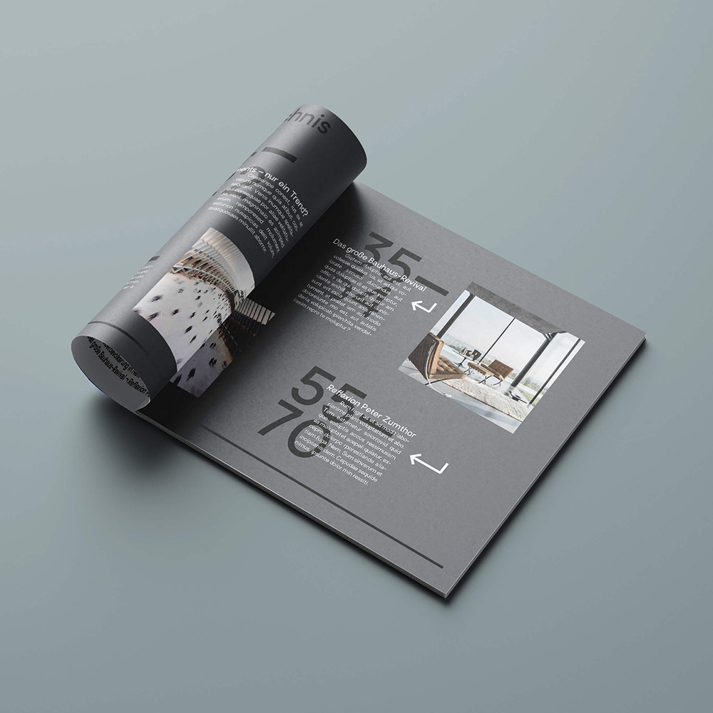
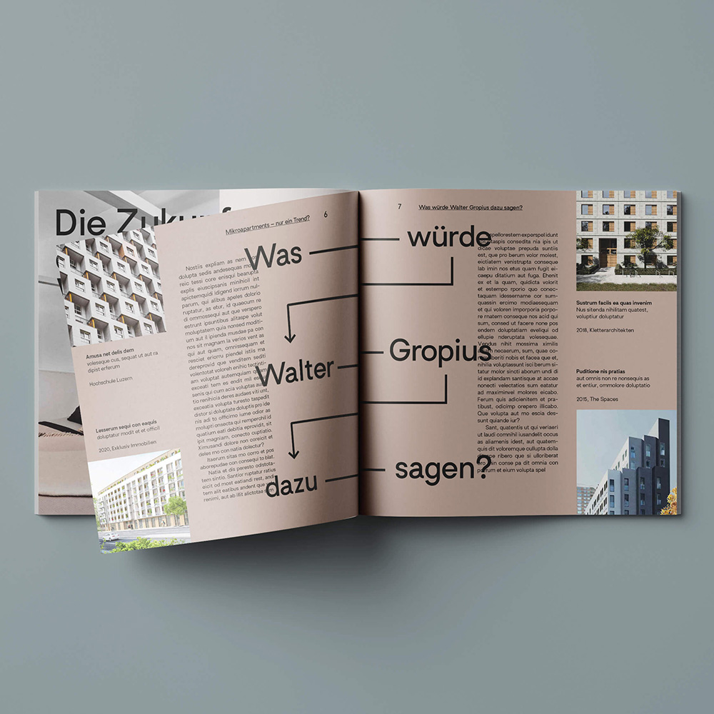

Kubik+
Personal project
May 2022
Presented here is a visual concept for a fictional architecture magazine entitled »Kubik+«. Architecture frequently operates within the field of tension between form and construction and interprets these aspects in a playful manner; this design approach is partially reflected in the logo as well.
In reference to the title »Kubik+«, I selected a square format for the magazine. This simultaneously provided me with the opportunity to engage with the fundamental geometric form, to deliberately emphasize its horizontal extension, and, for instance, to arrange the text symmetrically around the square.
The color scheme is based on neutral, nuanced tones that generate a sense of warmth. These warm shades of gray refer to contemporary interior design, as represented, among other contexts, in the illustrations. Arrows, (dotted) lines, and geometric shapes were employed as design elements in order to visually reflect the constructive and conceptual character of architectural working processes.
Kubik+
Persönliches Projekt
Mai 2022
Zu sehen ist ein visuelles Konzept für ein fiktives Architekturmagazin mit dem Titel »Kubik+«. Architektur bewegt sich häufig im Spannungsfeld von Form und Konstruktion und interpretiert diese Aspekte auf spielerische Weise; dieser Gestaltungsansatz spiegelt sich partiell auch im Logo wider.
In Anlehnung an die Bezeichnung »Kubik+« wählte ich für das Magazin ein quadratisches Format. Diese eröffnete mir zugleich die Möglichkeit, mit der geometrischen Grundform zu arbeiten, die Breitenwirkung gezielt zu betonen und den Text beispielsweise symmetrisch um das Quadrat herumzuführen.
Die Farbgestaltung basiert auf neutralen, nuancierten Tönen, die eine warme Atmosphäre erzeugen. Diese warmen Grauschattierungen nehmen Bezug auf moderne Wohninterieurs, wie sie unter anderem in den Illustrationen dargestellt sind. Als gestalterische Elemente kamen Pfeile, (gepunktete) Linien sowie geometrische Formen zum Einsatz, um den konstruktiven und entwerferischen Charakter architektonischer Arbeitsprozesse visuell zu reflektieren.

